|
Jie An | 安捷 I am a Ph.D. student (2020 - now) in Computer Science at University of Rochester, advised by Prof. Jiebo Luo. I was a research intern at Meta FAIR and Microsoft Cloud & AI. I obtained B.S. (2012 - 2016) and M.S. (2016 - 2019) in Applied Math from Peking University, advised by Prof. Jinwen Ma. ResearchMy research focuses on enhancing/extending generative models to cross-domain and cross-modal tasks. My previous research works include image, video, and multi-modal content generation, as well as image style transfer. Recently, I am interested in visual-language generation. Email / CV / Google Scholar / Github / LinkedIn / Name Pronounce |
{kind=link}
News
|
Publications |
|
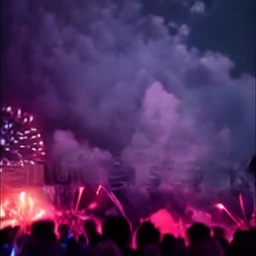
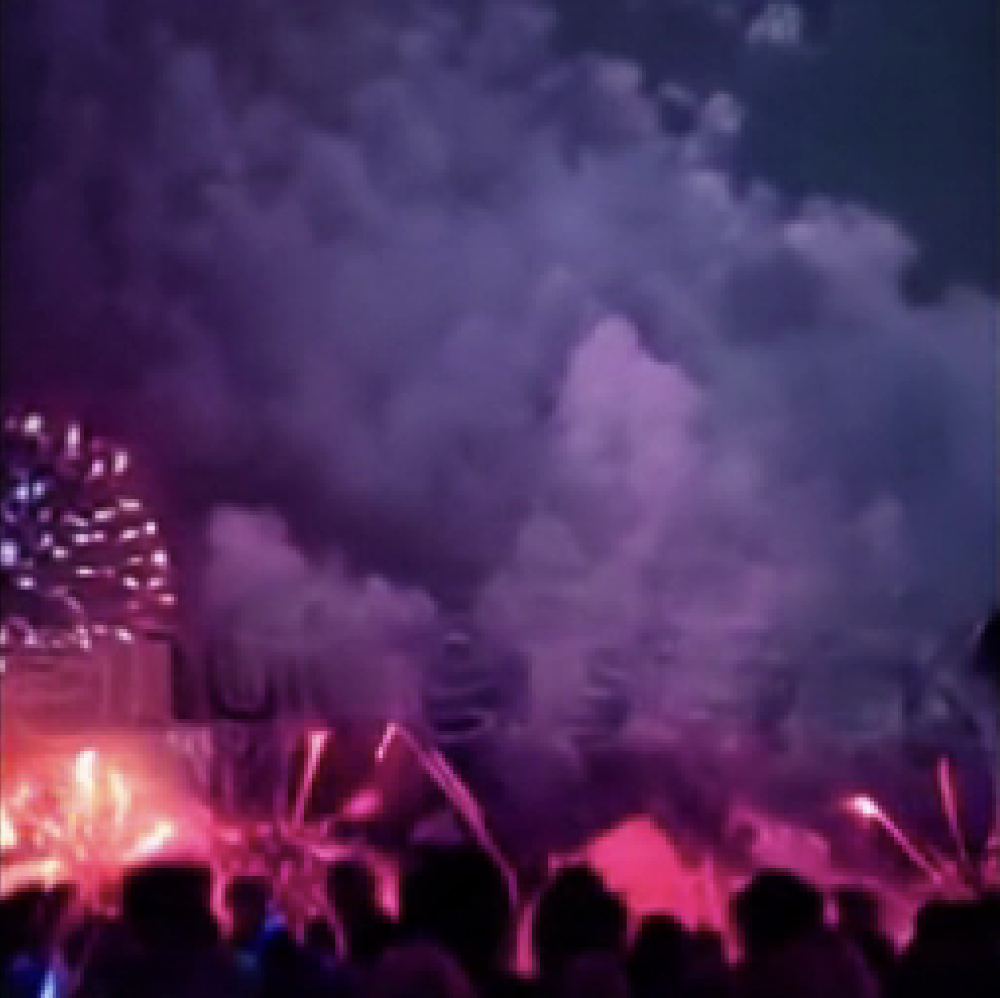
|
Latent-Shift: Latent Diffusion with Temporal Shift for Efficient Text-to-Video Generation
Jie An*, Songyang Zhang*, Harry Yang, Sonal Gupta, Jia-Bin Huang, Jiebo Luo and Xi Yin Arxiv 2023 | Project Page | BibTex We propose an efficient text-to-video generation method based on latent diffusion model and temporal shift. |

|
Learning to Evaluate the Artness of AI-generated Images
Junyu Chen, Jie An, Hanjia Lyu, Jiebo Luo Arxiv 2023 | BibTex We propose a rank-based method to evaluate the artness level of AI-generated artworks. |
|
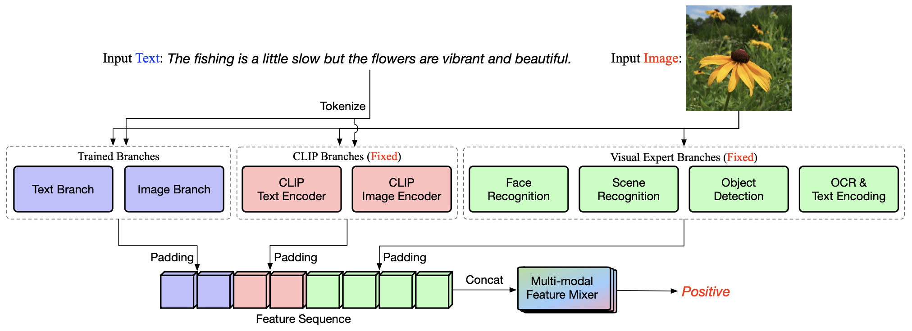
|
Improving Visual-textual Sentiment Analysis by Fusing Expert Features
Junyu Chen, Jie An, Hanjia Lyu and Jiebo Luo Arxiv 2023 | BibTex We ultilize multi-modal expert features to assist the sentiment analysis task. |
|
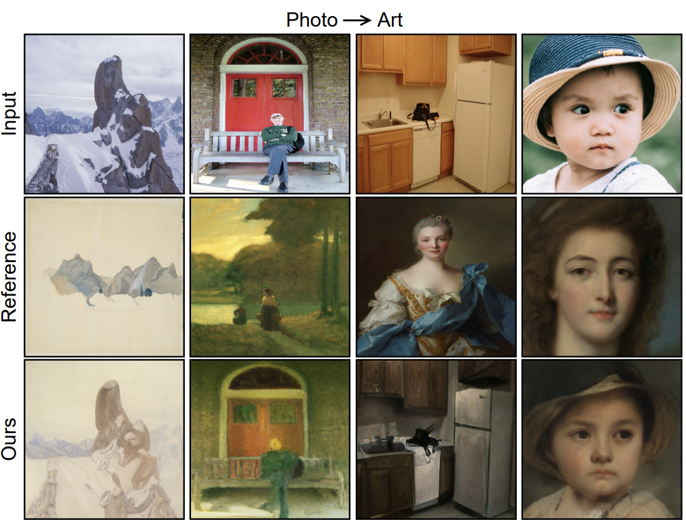
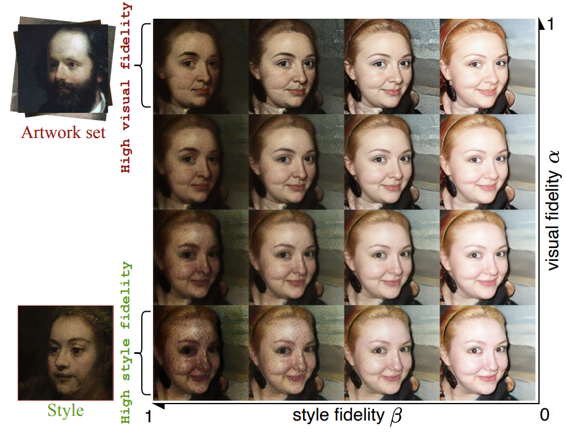
|
QuantArt: Quantizing Image Style Transfer Towards High Visual Fidelity
Siyu Huang*, Jie An*, Donglai Wei, Jiebo Luo and Hanspeter Pfister CVPR 2023 | Code | BibTex QuantArt allows the style transfer model take the reference from the whole artistic picture dataset, leading to improved visual fidelity. |
|
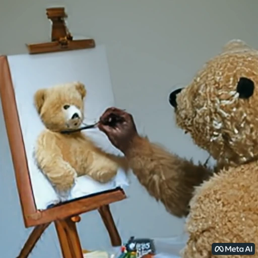
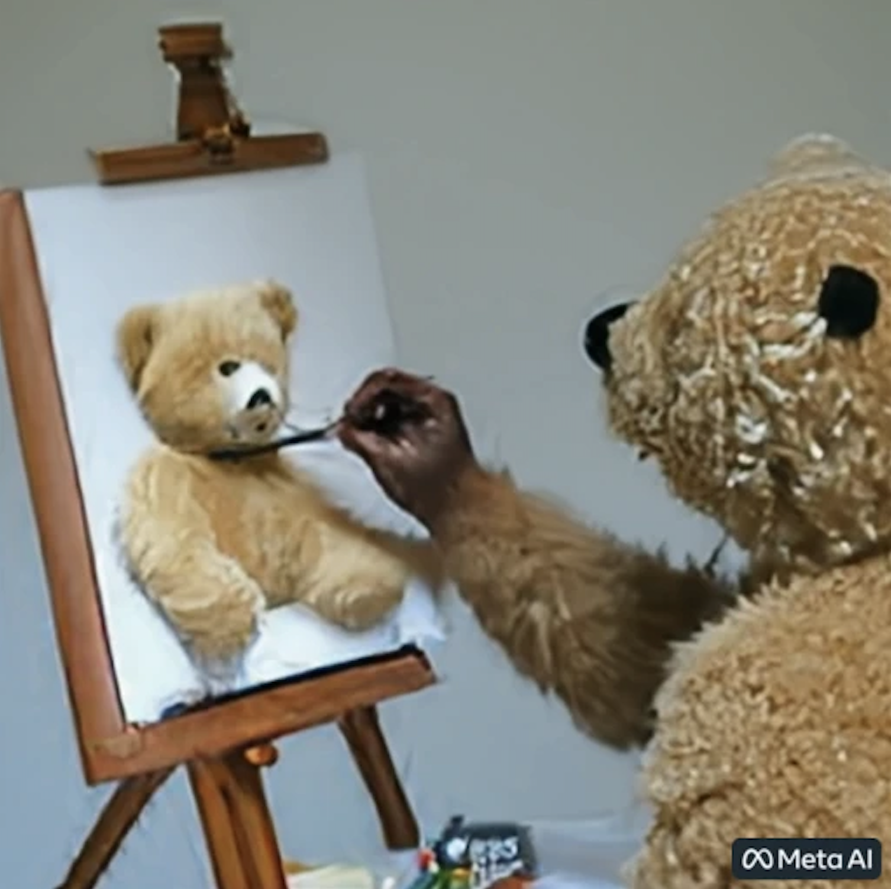
|
Make-A-Video: Text-to-video Generation Without Text-video Data.
Uriel Singer*, Adam Polyak*, Thomas Hayes*, Xi Yin*, Jie An, Songyang Zhang, Qiyuan Hu, Harry Yang, Oron Ashual, Oran Gafni, Devi Parikh, Sonal Gupta and Yaniv Taigman ICLR 2023 | BibTex We propose a text-to-video generation method based on diffusion model. |
|
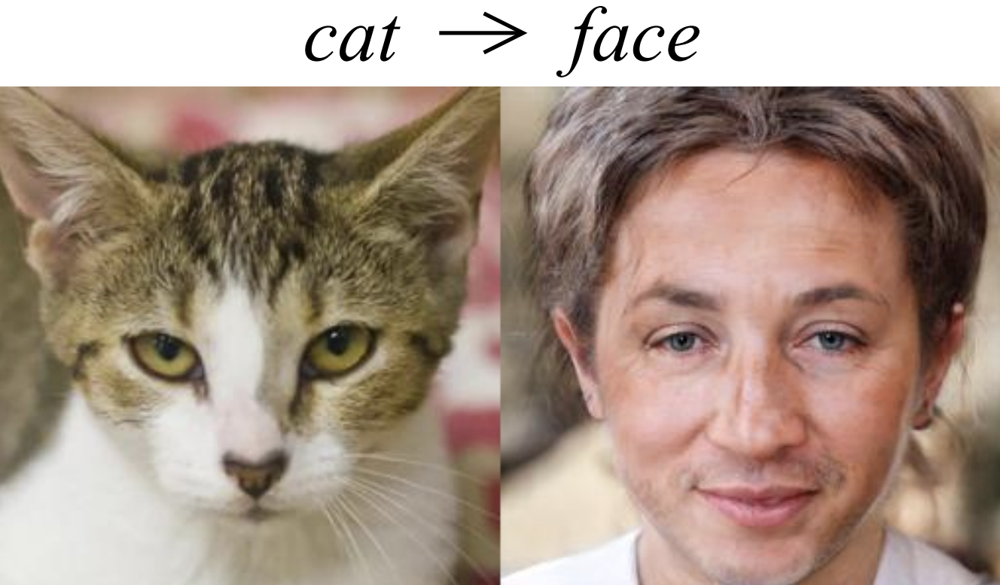
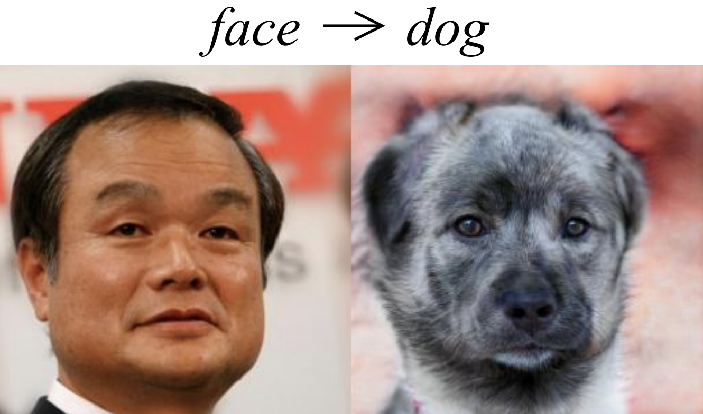
|
Domain-Scalable Unpaired Image Translation via Latent Space Anchoring
Siyu Huang*, Jie An* , Donglai Wei, Zudi Lin, Jiebo Luo and Hanspeter Pfister TPAMI | Code | BibTex We propose a GAN-based multi-domain image translation method that can extend to any unseen domain without the need to train the core backbone. |
|
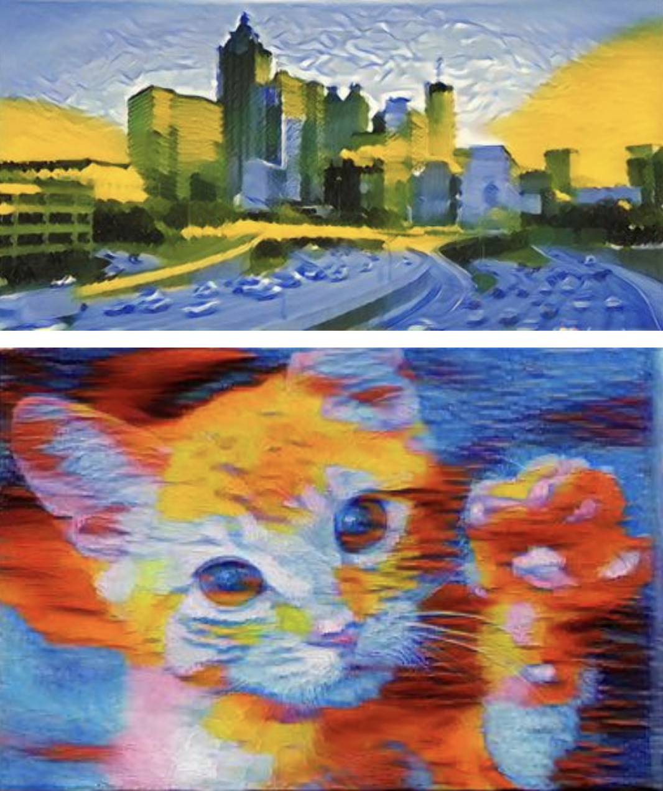
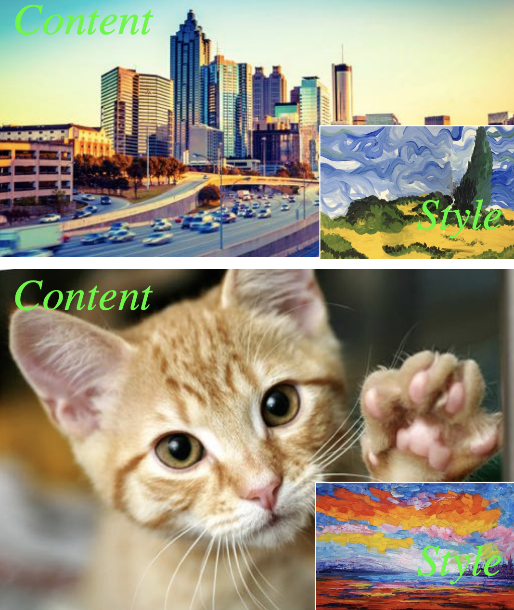
|
Is Bigger Always Better? An Empirical Study on Efficient Architectures for Style Transfer and Beyond
Jie An, Tao Li, Haozhi Huang, Jinwen Ma and Jiebo Luo WACV 2023 | BibTex We study whether the big VGG19 architecture is the best backbone for image style transfer and explore its efficient alternatives. |
|
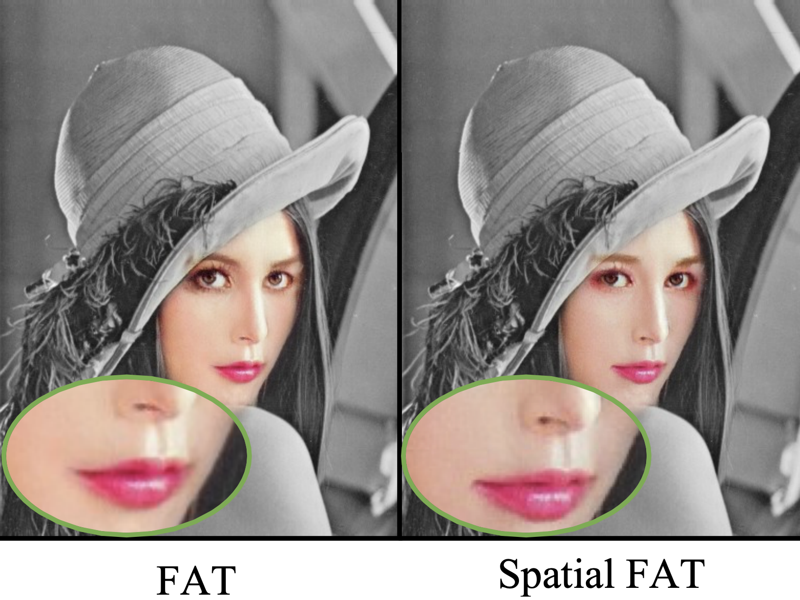
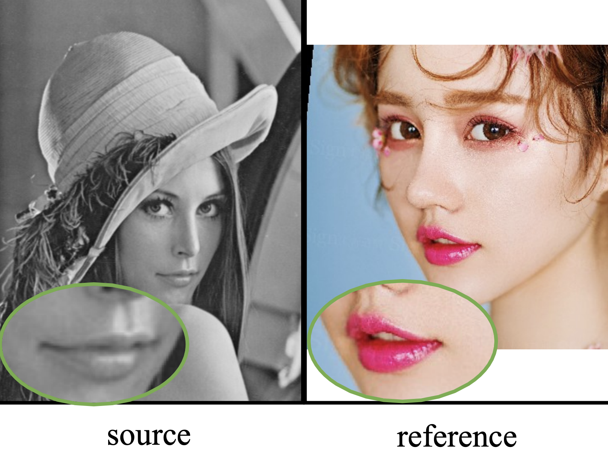
|
Facial Attribute Transformers for Precise and Robust Makeup Transfer
Zhaoyi Wan, Haoran Chen, Jie An, Wentao Jiang, Cong Yao and Jiebo Luo WACV 2022 | BibTex We propose an new transformer-based method for makeup transfer and removal. |


|
ArtFlow: Unbiased Image Style Transfer via Reversible
Neural Flows
Jie An*, Siyu Huang*, Yibing Song, Dejing Dou, Wei Liu and Jiebo Luo CVPR 2021 | Code | BibTex We propose an unbiased style transfer method based on neural flows to address the content leak issue in style transfer. |
|
|
Global Image Sentiment Transfer
Jie An, Tianlang Chen, Songyang Zhang and Jiebo Luo ICPR 2020 | BibTex We propose a method to transfer the global sentiment of images. |
|
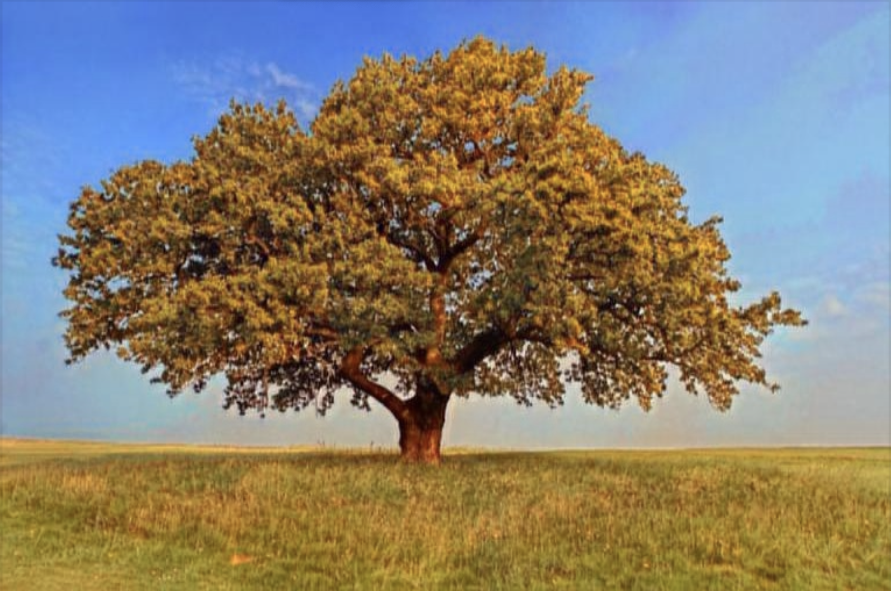
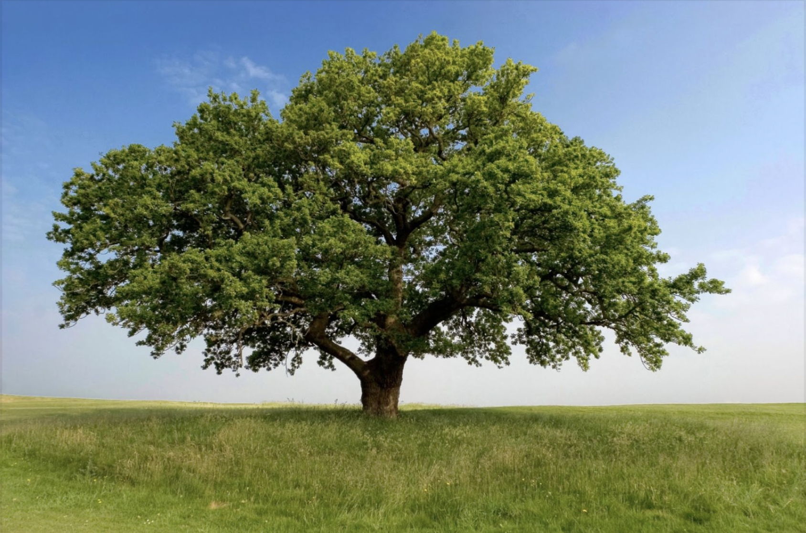
|
Ultrafast photorealistic style transfer via neural architecture search
Jie An*, Haoyi Xiong*, kun Huan and Jiebo Luo AAAI 2020 (Oral Presentation) | Code | BibTex We propose a neural architecture search framework to discover efficient architectures for photo-realistic style transfer. |
|
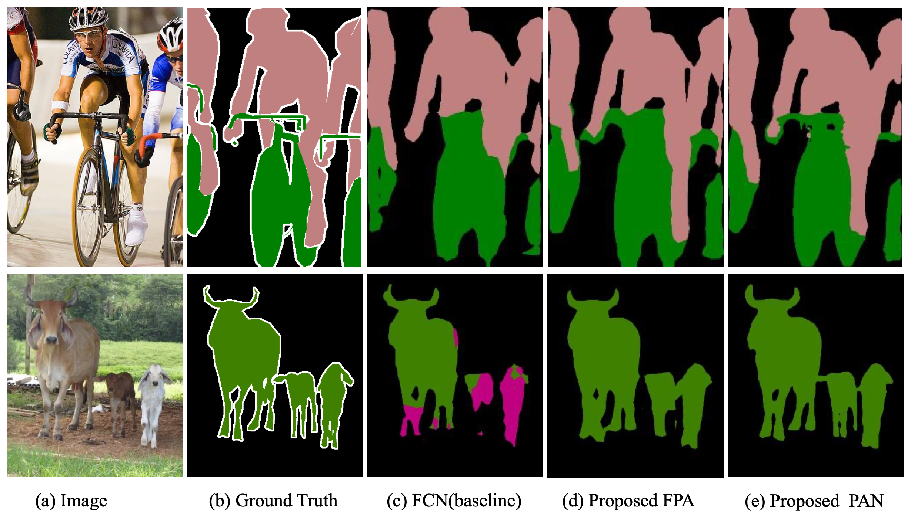
|
Pyramid attention network for semantic segmentation
Hanchao Li, Pengfei Xiong, Jie An, and Lingxue Wang BMVC 2018 | BibTex We propose a new network architecture for semantic image segmentation. |
Internship |
|
|
Microsoft Cloud & AI
[2023/02 - 2023/12] Advisor: Zhengyuan Yang, Jianfeng Wang, Linjie Li, Lijuan Wang, Zicheng Liu Project: Diffusion model and visual-language generation. |

|
Meta FAIR
[2022/05 - 2022/12] Advisor: Harry Yang, Xi Yin, Sonal Gupta Project: Text-to-video generation. |
Services |
Conference Reviewer
Conference Program Committee Member
Journal Reviewer
|